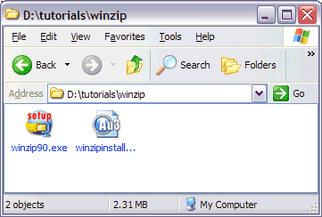

This tutorial explains how to automate the installation of WinZip 9 SR-1. It is assumed that you are already familiar with creating and running AutoIt scripts and the use of the AutoIt Window Information Tool to read window titles and text, as shown in the HelloWorld and Notepad tutorials.
The WinZip installation consists of approximately 10 dialog boxes that you must click buttons (usually Next) to continue. We are going to write a script that simply waits for these dialog boxes to appear and then clicks the appropriate buttons. As usual with these types of installations the window title of each dialog is the same (WinZip Setup) so we must use window text to tell the difference between windows. Screenshots of each dialog will be provided and you can click on the picture to see the Information Tool output for that dialog.
First create a directory that we will use for the WinZip installer and our script file. Copy the WinZip installer to this directory and create a blank script called winzipinstall.au3.

We will now run through the installation manually and write the script as we go. The script lines to automate each dialog will be shown after each picture (remember to click on the picture to see the AutoIt Window Information Tool output). You can also look at the completed script for reference.
The first script line is easy, we want to run the winzip90.exe installer. So the first line is:
Run("winzip90.exe")
The first dialog will pop-up:
We need to wait for this window to popup and become active, and then we need to send the keystroke ALT-s to click the Setup button. The resulting script lines are:
WinWaitActive("WinZip® 9.0 SR-1 Setup", "&Setup")
Send("!s")
(Remember to click on the picture to see the AutoIt Window Information Tool output, this is especially important as the title contains the special (R) character which would be difficult to type).
The installation location dialog will appear next:
We need to wait for this screen to be active and then click ENTER to accept the install location. The script lines are:
WinWaitActive("WinZip Setup", "into the following folder")
Send("{ENTER}")
The WinZip Features dialog will appear next:
Notice that this window has exactly the same title as the first of WinZip Setup - in fact all the dialogs in the setup have this title! In order to tell the difference between these windows we must also use the window text - on each screen try to pick the most unique text you can. In this case I've chosen WinZip features include. After the window has appeared we will want to press ALT-n:
WinWaitActive("WinZip Setup", "WinZip features include")
Send("!n")
The License dialog will appear next:
Wait for the window to appear and then press ALT-y to accept the agreement:
WinWaitActive("License Agreement")
Send("!y")
Setup continues in a similar fashion for a few dialogs. The picture of each dialog is shown along with the script lines needed to automate it.
WinWaitActive("WinZip Setup", "Quick Start Guide")
Send("!n")
WinWaitActive("WinZip Setup", "switch between the two interfaces")
Send("!c")
Send("!n")
WinWaitActive("WinZip Setup", "&Express setup (recommended)")
Send("!e")
Send("!n")
WinWaitActive("WinZip Setup", "WinZip needs to associate itself with your archives")
Send("!n")
This is the final dialog of the setup. Notice that the Finish button doesn't have a keyboard shortcut - luckily it is the default button on this dialog so we can just press ENTER to select it. If this were not the case then we would have to TAB between controls or better yet use the ControlClick function.
WinWaitActive("WinZip Setup", "Thank you for installing this evaluation version")
Send("{ENTER}")
After installation WinZip will automatically start:
We simply wait for the main WinZip window to appear and then close it with the WinClose function.
WinWaitActive("WinZip (Evaluation Version)")
WinClose("WinZip (Evaluation Version)")
Here is the completed script - note that I have commented each dialog separately which makes it easier to follow and to change in the future (the next version of WinZip may be slightly different).
And that's it! Run the winzipinstaller.au3 script and watch as WinZip is installed in just a few seconds! The techniques used in this tutorial can be used to automate the installation of most programs.
As an exercise for the reader, try and redo the script but instead of using the Send function (which sends keys to the active window) to click on buttons try and use ControlClick instead which can be much more reliable. You will need to read up on Controls to do this.